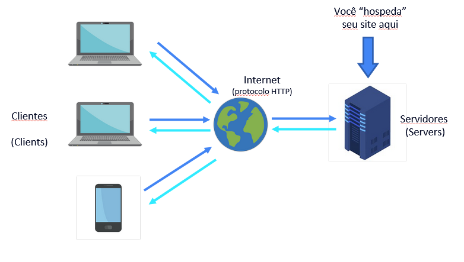

O'QUE SAO CLIENTS
Clients
Sumario
conceito de client
navegadores
Aplicacao web
Dispositivos moveis
voltar
o'que sao clientes ?
Clientes sao os usuarios de dispositovos eletronicos, seja ele desktop, notbook ou dispositivos moveis (
smartphones), que possuem acesso a internet ou a algum servidor

Conforme na imagem o cliente ele tem uma conexao com a internete seguindo o protocolo HTTP e essa
internet conecta ele com algum
servidor onde sao hospedados/armazenados os sites ou paginas ou programas ou dados
Os clients web operam baseados no modelo cliente-servidor, onde o client inicia as solicitações de conexão,
envia solicitações ao servidor, aguarda por uma resposta, e então processa essa resposta. Esta interação é
fundamental para a funcionalidade da internet, permitindo a troca de informações e a realização de transações em
uma vasta gama de aplicações online.
Sumario
o'que sao Navegadores ?
Navegadores sao programas criados por empresas, utilizados para abri/executar arquivos, eles segue o padrao W3,
porem cada
um tem sua propria particularidade na interpretacao. Alem disso possuem visual diferente um do outro alem de
questoes de sempenho
, Mundialmente conhecidos como "browsers" oferecem uma maneira facil de os Clients de forma geral acesarem
conteudos ou programas.
Teve inicio com o MOSAIC, passou para o Netscape, e hoje existe uma variedade de navegadores disponiveis e em
sua maioria gratuito.

Quando feito o desenvolvimento de uma pagina pelo HTML vale resaltar que em sua maioria os comando
utilizados na "programacao" funciona porem alguns podem apresentar erro ou como e dito no meio
tecnologico "BUG".
Sumario
o'que sao aplicacoes web ?
Apricacoes web sao todo e qualquer forma de navegar que envolva apenas o navegador, ou seja , nao tem a
interferencia direta
de um programa, por exemplo navegar no youtube pelo browser e navegar pelo APP do youtube, quando navegado pelo
browser e considerado uma
aplicacoa web tendo em vista que a comunicacao foi cliente X servidor, enquanto para usar o APP primeiramente e
necessario que seja feito a sua instalacao
e apos essa instalcao voce pode fazer essa comunicacao cliente X servidor, porem voce nesse caso possui o
intermediario que é o aplicativo
Sumario
o'que sao dispositivos moveis ?
Dispositivos moveis sao oque podemos dizer hoje como ferramente indispensavel para o funcionamento do dia a dia,
sejam ela smartphone, smartwatch ou tablet. E a sua definicao e simples, e aquele aprelho eletronico que nao
necessita de estar em um local fixo para
funciona, atraves dele voce pode navegar em brawsers, baixar aplicativos ou salva dados para uso posterior ou
imediato.
Desta forma podemos dizer que é o futuro que a 30 anos atras estava sendo idealizado e imaginado.
Sumario
voltar